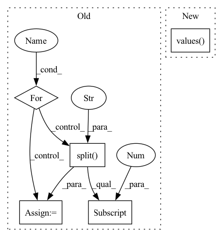

Pattern ID :16726
Before Change
numba_imports_path = ["model_analyzer.device.gpu_device_factory"]
for import_path in numba_imports_path:
device = MagicMock()
// Ignore everything after 0
test_pci_id = str(TEST_PCI_BUS_ID, encoding="ascii").split(".")[0]
pci_domain_id, pci_bus_id, pci_device_id = test_pci_id.split(":")
device.get_device_identity = MagicMock(
return_value={
"pci_bus_id": int(pci_bus_id, 16),After Change
Fills the patcher list for destruction
for patcher in self._patchers_numba.values() :
self._patchers.append(patcher)
In pattern: SUPERPATTERN
Frequency: 3
Non-data size: 5
Instances Fragment ID: 55974560
Project Name: triton-inference-server/model_analyzer
Commit Name: 2e87e279f4cdf57f7bbffb4d42d9011280d39b56
Time: 2021-05-18
Author: asramesh@nvidia.com
File Name: tests/mocks/mock_numba.py
M Class Name: MockNumba
N Class Name: MockNumba
M Method Name: _fill_patchers(1)
N Method Name: _fill_patchers(1)
M Parent Class: MockBase
N Parent Class: MockBase
M File Name: tests/mocks/mock_numba.py
N File Name: tests/mocks/mock_numba.py
M Start Line: 27
M End Line: 48
N Start Line: 58
N End Line: 59
Before Change
// Create absolute loss and mult with loss coefficient
loss_abs = 0
for loss_key, loss_val in loss_dict.items():
loss_abs += loss_val * self._config["loss_coefs"][loss_key.split("_")[0] ]
self._optimizer.zero_grad()
loss_abs.backward()After Change
// Make prediction
losses, _ = self._model.train_step(data, targets, evaluation=False)
loss_abs = sum(losses.values() )
print(loss_abs)
self._optimizer.zero_grad() Fragment ID: 55974558
Project Name: bwittmann/transoar
Commit Name: a99ec97275b90fd19944f39945724c5e0f9895a3
Time: 2022-01-17
Author: bastian.wittmann@tum.de
File Name: transoar/trainer.py
M Class Name: Trainer
N Class Name: Trainer
M Method Name: _train_one_epoch(2)
N Method Name: _train_one_epoch(2)
M Parent Class:
N Parent Class:
M File Name: transoar/trainer.py
N File Name: transoar/trainer.py
M Start Line: 45
M End Line: 66
N Start Line: 46
N End Line: 72
Before Change
// Create absolute loss and mult with loss coefficient
loss_abs = 0
for loss_key, loss_val in loss_dict.items():
loss_abs += loss_val * self._config["loss_coefs"][loss_key.split("_")[0] ]
// Evaluate validation predictions based on metric
pred_boxes, pred_classes, pred_scores = inference(prediction)After Change
// Make prediction
losses, predictions = self._model.train_step(data, targets, evaluation=True)
loss_abs = sum(losses.values() )
loss_agg += loss_abs.item()
loss_bbox_agg += losses["reg"].item() Fragment ID: 55974559
Project Name: bwittmann/transoar
Commit Name: 00768630087f32a1ba35dda71dc4f1823d45499c
Time: 2022-01-20
Author: bastian.wittmann@tum.de
File Name: transoar/trainer.py
M Class Name: Trainer
N Class Name: Trainer
M Method Name: _validate(2)
N Method Name: _validate(2)
M Parent Class:
N Parent Class:
M File Name: transoar/trainer.py
N File Name: transoar/trainer.py
M Start Line: 98
M End Line: 138
N Start Line: 100
N End Line: 140